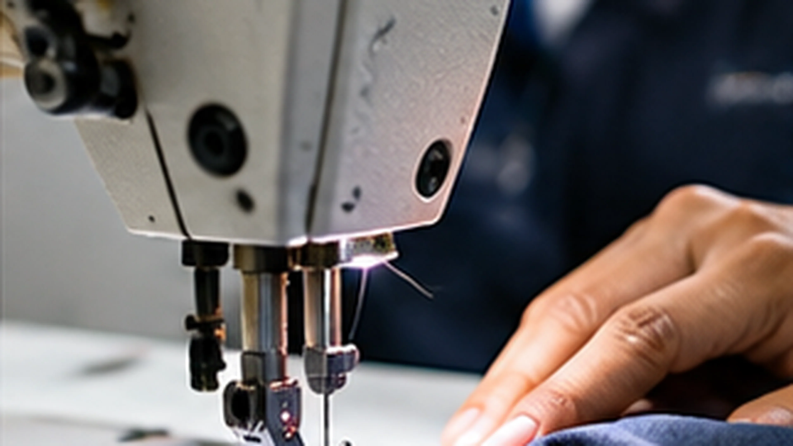

FROM THE FACTORY FLOOR
↗Built from the ground up.
One founder began as a sewing machine operator in 1989 and progressed through the industry to become Chief Executive Officer of a top-ten company, as described in the company profile.
Three distinct journeys. One shared commitment to building a capable, growth-focused apparel company.

Expertise isn’t inherited.
It is built, day after day.
IZON Apparel was founded by three experienced professionals with deep roots in the textile and garment industry. Their collective manufacturing knowledge, leadership experience and entrepreneurial drive shape the company's approach to every partnership.
One founder began as a sewing machine operator in 1989 and progressed through the industry to become Chief Executive Officer of a top-ten company, as described in the company profile.
Another founder began as a junior merchandiser and advanced to become Brand Head of a public limited company.
The third founder brings experience developing multiple businesses across the textile industry, alongside commercial insight and entrepreneurial leadership.

Four ideas are woven into our name — and the way we approach tomorrow.
To deliver world-class, value-driven garment solutions through integrated manufacturing capabilities, expertise, innovation and operational excellence — with quality, execution and long-term partnerships at the centre.
To help people working with IZON achieve prosperity and develop entrepreneurial excellence, creating shared opportunity, growth and long-term success.